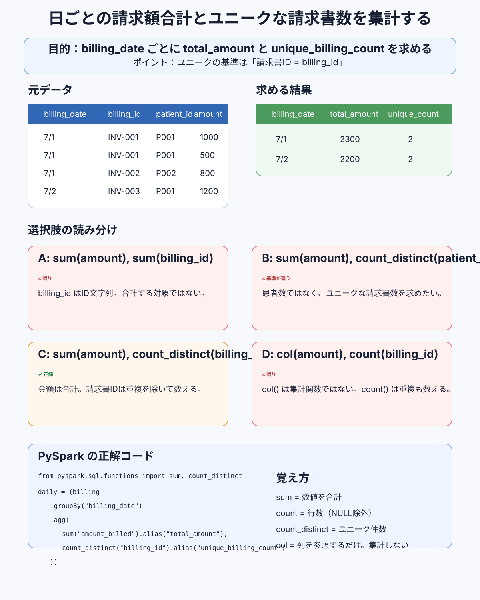

日ごとの合計とユニーク件数を集計する
日ごとの請求額合計と、ユニークな請求書数を求める問題です。 ユニークの基準は patient_id ではなく billing_id。 問題文の名詞をそのまま列に対応させると、正解に迷わなくなります。
{kind=link}

何を求めたいのか元データ billing
何を求めたいのか元データ billing
| billing_date | billing_id | patient_id | amount_billed |
|---|---|---|---|
| 2025-07-01 | INV-001 | P001 | 1000 |
| 2025-07-01 | INV-001 | P001 | 500 |
| 2025-07-01 | INV-002 | P002 | 800 |
| 2025-07-02 | INV-003 | P001 | 1200 |
| 2025-07-02 | INV-003 | P001 | 300 |
| 2025-07-02 | INV-004 | P003 | 700 |
正解のコードgroupBy + agg
正解のコードgroupBy + agg
from pyspark.sql.functions import sum, count_distinct
daily = (billing
.groupBy("billing_date")
.agg(
sum("amount_billed").alias("total_amount"),
count_distinct("billing_id").alias("unique_billing_count")
))| billing_date | total_amount | unique_billing_count |
|---|---|---|
| 2025-07-01 | 2300 | 2 |
| 2025-07-02 | 2200 | 2 |
sum とカウント ディスティンクトを使う理由数値は足す・重複は除く
sum とカウント ディスティンクトを使う理由数値は足す・重複は除く
なぜ sum(amount_billed) か
amount_billed は金額の数値です。2025-07-01 は
1000 + 500 + 800 = 2300。
なぜ count_distinct(billing_id) か
同じ請求書が複数行に分かれることがあります。INV-001 が2行、
INV-002 が1行あるとき、単純な count() は3を返しますが、
実際の請求書は2種類だけです。
集計のスコープ（計算の対象範囲）を意識する話は、 OVER とは（計算するスコープ）でも扱っています。
よくある誤答3パターン
よくある誤答3パターン
| 誤答 | 問題点 |
|---|---|
sum("billing_id") | IDは文字列であることが多く、足し算する意味がない |
count_distinct("patient_id") | 文法は正しいが対象が違う。数えているのはユニークな患者数 |
col("amount_billed") | 列を参照するだけで集計関数ではない |
count とカウント ディスティンクトの違い3 と 2
count とカウント ディスティンクトの違い3 と 2
billing_id の並びが INV-001 / INV-001 / INV-002 のとき。
| 関数 | 結果 | 意味 |
|---|---|---|
count("billing_id") | 3 | 行をそのまま数える |
count_distinct("billing_id") | 2 | 重複を除いて数える |
問題を解くときの読み方名詞を列に対応させる
問題を解くときの読み方名詞を列に対応させる
| 問題文の言葉 | 対応する列 | 使う関数 |
|---|---|---|
| 請求額の合計 | amount_billed | sum |
| ユニークな請求書数 | billing_id | count_distinct |
一言で言えば
「ユニークな○○」と書いてあったら、まず count_distinct() と、
その○○に対応する列を探す。